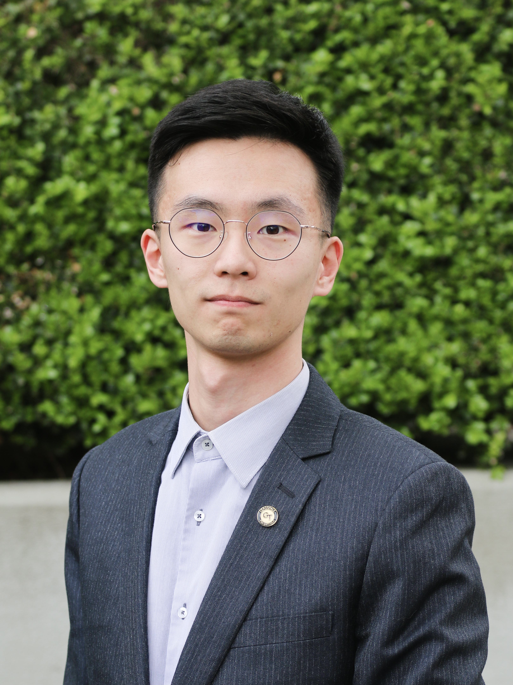
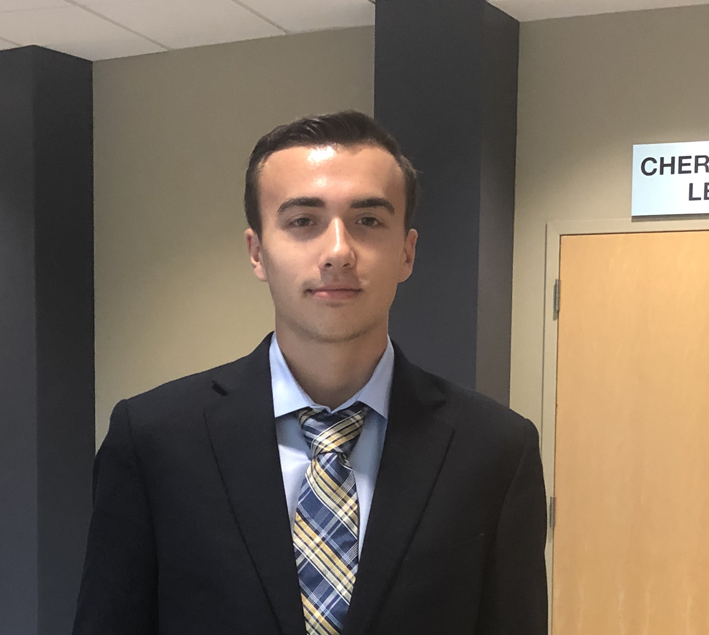

People¶
Principal investigator¶
Dr. Graeme J. Kennedy¶
{kind=link}
Dr. Graeme J. Kennedy is an associate professor in the Guggenheim School of Aerospace Engineering at the Georgia Institute of Technology where he leads his research team. His research involves the development and application of numerical optimization techniques to structural and multidisciplinary design problems, with a primary focus on the analysis and design of fixed-wing aircraft. Before joining the faculty, Dr. Kennedy was a postdoctoral research fellow at the University of Michigan in the Department of Aerospace Engineering. Dr. Kennedy received his PhD from the University of Toronto Institute for Aerospace Studies (UTIAS) in 2012.
Current Students¶
Yicong (Aaron) Fu, 2020 - present¶
{kind=link}

Yicong Fu is a second-year Ph.D. Student. Prior to joining the group, he obtained his MS degree from Aerospace Systems Design Laboratory, Georgia Tech in 2020, and his BS degree from Beihang University (BUAA), China in 2018. His research interests include topology optimization, finite element analysis, high performance computing and GPU computing.
Bao Li, 2020 - present¶
{kind=link}
Bao Li is a Ph.D. Student in the Aerospace Engineering at the Georgia Institute of Technology. He holds an MS degree in Aerospace Engineering from the University of Michigan. His work focuses on the development of the next-generation electric aircraft using advanced computational optimization methods which include topology optimization and multidisciplinary design optimization. Currently, he is working on the novel thermal structural design, distribution propulsion system, and integrated conceptual design for the electric aircraft. (Images will update later)
- External links:
Rohan Patel, 2020 - present¶
{kind=link}
Rohan Patel is a M.S. student in Aerospace Engineering at the Georgia Institute of Technology, where he completed his B.S. in AE as well. His research focuses on incorporating dynamic simulations and impact modeling into the SMDO Group’s structural optimization framework. Throughout his three summer internships at Spirit AeroSystems, Rohan has worked on structural analysis and design for numerous aircraft programs including the Airbus A350 and KC-46 Tanker. Rohan hopes to develop more efficient structural optimization tools to accelerate the use of MDO throughout the aerospace industry.
Sean Engelstad, 2021 - present¶
{kind=link}

Sean Engelstad is a first year M.S. student in Aerospace Engineering at the Georgia Institute of Technology, where he received his B.S. in AE as well. Sean has interned at the Aerospace Corporation the past two summers, working on design curves for unvented sandwich structures, a methodology for the treatment of pressure transients in space systems, and machine learning for valve failures in fluid systems. As a part of the SMDO group, Sean is working on adding mesh sensitivity to TACS and Fun2FEM using Engineering Sketch Pad, or ESP/CAPS.
- External links: